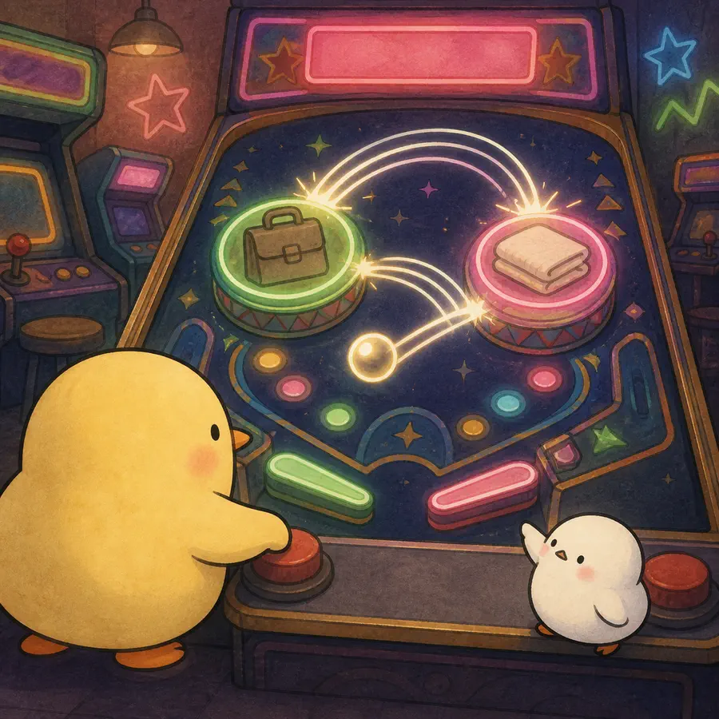

ILLUSTRATED OVERVIEW
The Country That Never Retires: The Gendered Pathways to Retirement in South Korea
한국의 은퇴는 한 번 끝나는 게임이 아니라 일과 비취업 범퍼 사이를 여러 번 되튕기는 젠더화된 과정이다.
옆으로 넘겨 4컷 보기
-

연구는 은퇴를 흡수상태로 두지 않고 노동시장 이탈과 재진입이 반복될 수 있는 별도 사건으로 모델링했다.
-
직업력은 주로 남성의 전환과, 배우자·동거·자녀지원은 주로 여성의 전환과 더 강하게 관련됐다.
-
같은 경력·가족 요인도 노동시장 이탈과 재진입에서 방향과 유의성이 달랐고, 그 패턴도 젠더별로 같지 않았다.
-
늦은 노동과 재진입은 활동적 노화의 선택만이 아니라 취약한 연금·누적된 노동시장 불이익·가족자원 부족의 결과일 수 있다.